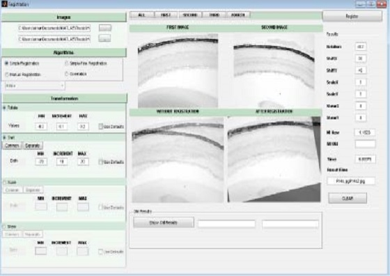
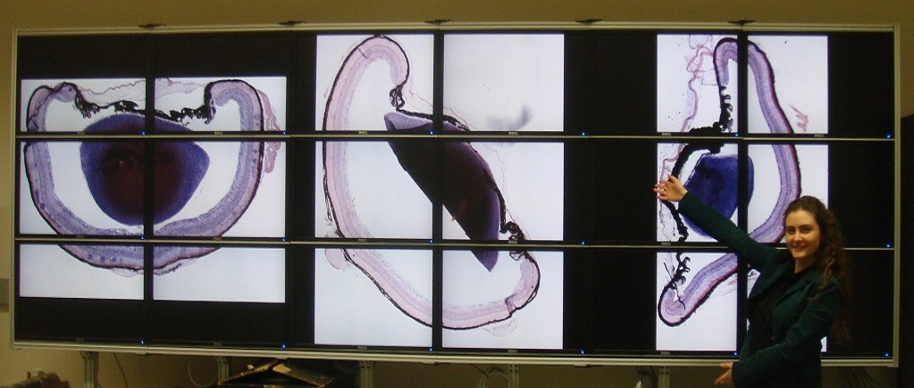

Generative AI Objective Generation

LLM-powered structured content generation
Built an LLM-based system that converts natural language into structured JSON for live-service objective creation.
The system used schema validation and retrieval-based grounding to improve reliability and control.
Impact: Enabled ~82% of FC26 launch objectives (142 objectives) and reduced setup time by ~60%.
Recommendation & Personalization

Player targeting and scalable personalization
Developed recommendation systems for targeted objectives, store personalization, and ads using segmentation,
experimentation, and ranking logic.
Impact: Supported systems with projected and measured multi-million dollar revenue impact across FC live services.
Machine Learning Systems

Prediction, modeling, and decision support
Built and deployed production ML systems including pack recommendation, churn prediction, xG modeling,
and gameplay-related analysis across multiple titles.
Impact: Replaced external solutions, improved player targeting, and generated multi-million dollar business value.